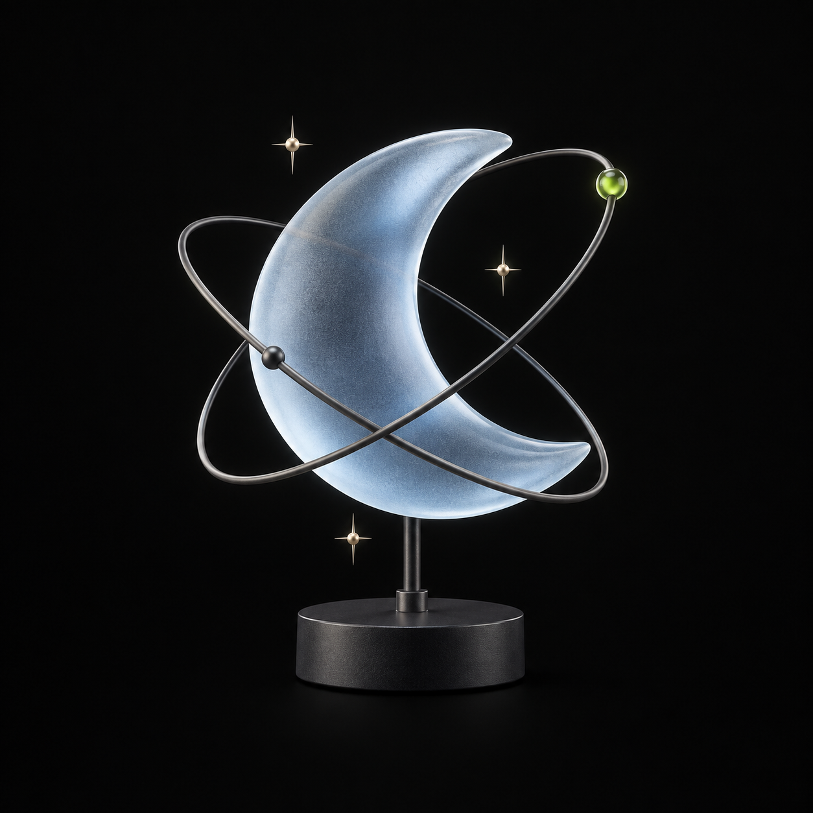

Genialer Wecker● 3 Wecker · 2 aktiv
32:19Std. bis
22:41
- Heute
- Freitag, 18. September 2026
- Nächster
- So, 20.09. · 07:00
- Name
- Frühschicht
- Rest
- 1 Tag 8 Std.
- Schlafenszeit
- Sa 23:00
AnZeitName · TaktNächster
07:00
Frühschicht
Alle 35 Tage · ab 29.03.2026 20.09.
Alle 35 Tage · ab 29.03.2026 20.09.
06:30
Werktags
Mo–Fr Mo 21.09.
Mo–Fr Mo 21.09.
09:15
Wochenende
Sa · So aus
Sa · So aus
Vorschau mit einer festen Momentaufnahme: Freitag, 18.09.2026, 22:41 Uhr. Uhrzeit, Restzeit und Termine stehen still und gehören zusammen; es wird nichts geplant oder ausgelöst.
